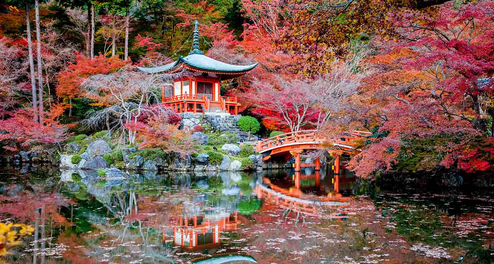

Visit Japan
Visit Japan

View below for Japanese Culture
The culture of Japan has evolved greatly over the millennia, from the country's Jomon period, to its contemporary festivals, which absorb influences from Asia, Europe, and North America.
| Cultures and Festivals in Japan | |
|---|---|
| Location | Overview |
| Gion Matsuri | |
| Kyoto | Gion Matsuri is a one of the most famous festivals in Japan. It takes place during the entire month of July, but the highlight is the grand procession of floats called “Yamaboko Junko” on the 17th and 24th. It takes place on the Kawaramachi and Oike Streets. |
| Awa Odori | |
| Tokushima | This is the largest traditional dance festival in Japan. Men, women and children dance on almost all of the streets in Tokushima City, from the 12th to the 15th of August. They wear summer cotton kimono and straw hats. More than a million people get together for this festival, and it is a spectacular sight. |
| Kanda Matsuri | |
| Tokyo | Kanda Matsuri is one of the most famous festivals in Tokyo and is a festival for the Kanda Myojin Shrine. The main action happens during the middle of May. The portable shrines, called Mikoshi, are accompanied by about a thousand people, and after they leave the Kanda Myojin Shrine in the morning, the parade continues through the Kanda district, Nihonbashi and Akihabara and returns to the shrine in the evening. |
| Nebuta Matsuri | |
| Aomori | The Nebuta Matsuri takes place from the 2nd to the 7th of August in Aomori City. Nebuta are lantern floats which depict human figures and are accompanied by thousands of chanting dancers. The parade starts at sunset and continues for hours. |
Expand for a Back to Top Link
Back to TopCreated by - Prateek Bansal
on Friday June 9 2017
All content, unless otherwise stated, is the property of Prateek Bansal